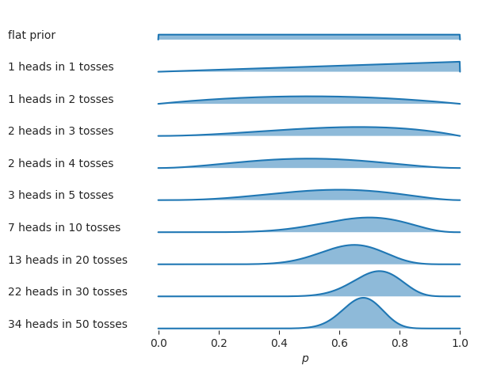
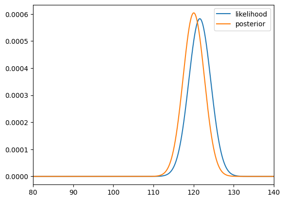
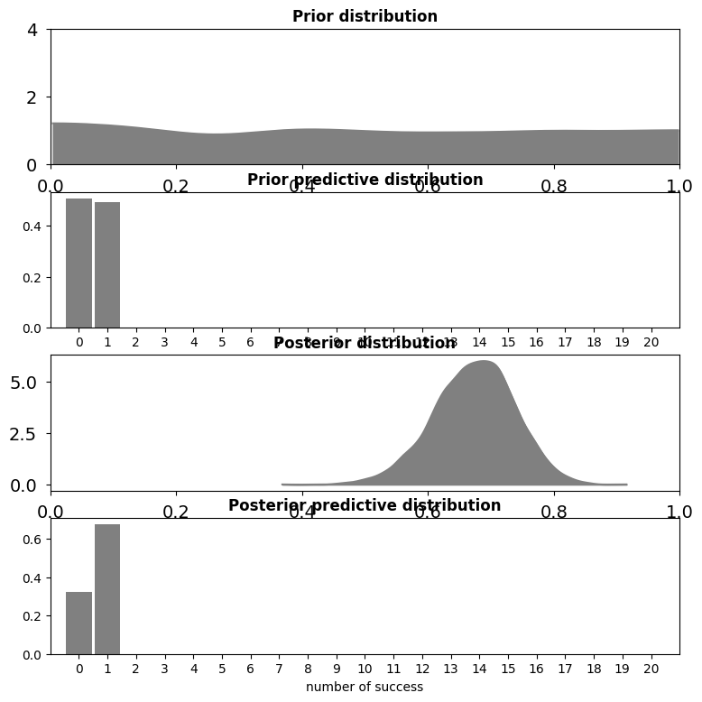
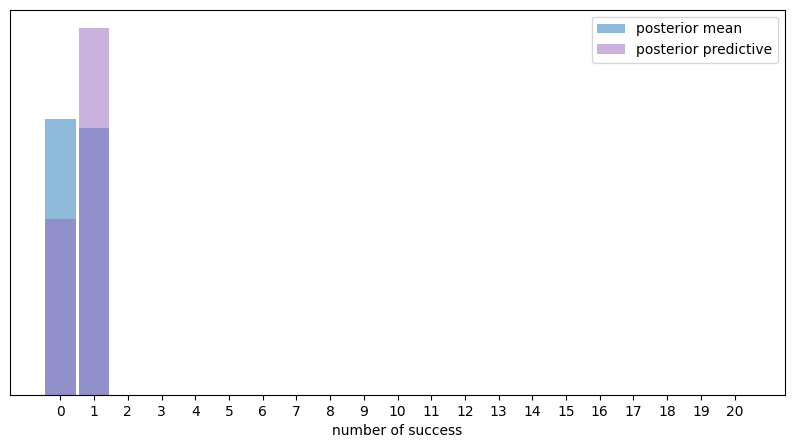
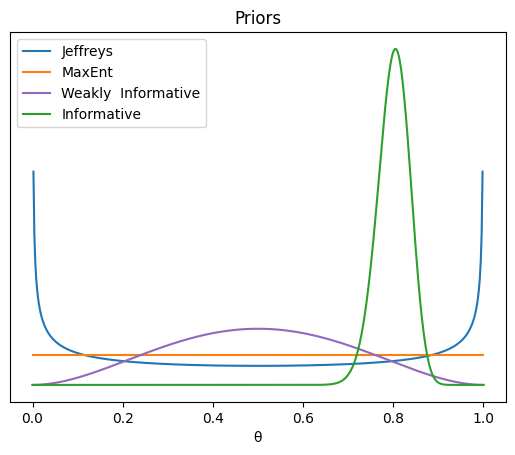
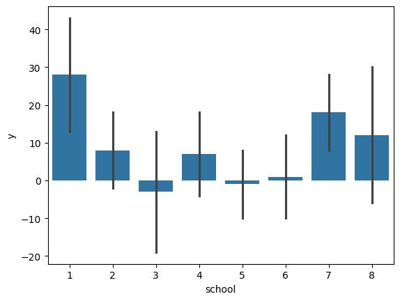

Chapter 5: Extra code, drafts, and cut material#
import numpy as np
import pandas as pd
import matplotlib.pyplot as plt
import seaborn as sns
Beta-binomial demos#
from scipy.special import binom, betaln
def beta_binom(prior, y):
"""
Compute the marginal-log-likelihood for a beta-binomial model,
analytically.
prior : tuple
tuple of alpha and beta parameter for the prior (beta distribution)
y : array
array with "1" and "0" corresponding to the success and fails respectively
"""
α, β = prior
success = np.sum(y)
trials = len(y)
return np.log(binom(trials, success)) + betaln(α + success, β+trials-success) - betaln(α, β)
def posterior_grid(ngrid=10, α=1, β=1, heads=6, trials=9):
grid = np.linspace(0, 1, ngrid)
prior = stats.beta(α, β).pdf(grid)
likelihood = stats.binom.pmf(heads, trials, grid)
posterior = likelihood * prior
posterior /= posterior.sum()
return posterior
def normal_harmonic(sd_0, sd_1, y, s=10000):
post_tau = 1/sd_0**2 + 1/sd_1**2
posterior_samples = stats.norm(loc=(y/sd_1**2)/post_tau, scale=(1/post_tau)**0.5).rvs((s, len(x)))
log_likelihood = stats.norm.logpdf(loc=x, scale=sd_1, x=posterior_samples).sum(1)
return 1/np.mean(1/log_likelihood)
from scipy import stats
σ_0 = 1
σ_1 = 1
y = np.array([0])
stats.norm.logpdf(loc=0, scale=(σ_0**2+σ_1**2)**0.5, x=y).sum()
-1.2655121234846454
def posterior_ml_ic_normal(σ_0=1, σ_1=1, y=[1]):
n = len(y)
var_μ = 1/((1/σ_0**2) + (n/σ_1**2))
μ = var_μ * np.sum(y)/σ_1**2
σ_μ = var_μ**0.5
posterior = stats.norm(loc=μ, scale=σ_μ)
samples = posterior.rvs(size=(2, 1000))
log_likelihood = stats.norm(loc=samples[:, :, None], scale=σ_1).logpdf(y)
idata = az.from_dict(log_likelihood={'o': log_likelihood})
log_ml = stats.norm.logpdf(loc=0, scale=(σ_0**2+σ_1**2)**0.5, x=y).sum()
x = np.linspace(-5, 6, 300)
density = posterior.pdf(x)
return μ, σ_μ, x, density, log_ml, az.waic(idata).elpd_waic, az.loo(idata, reff=1).elpd_loo
import arviz as az
y = np.array([ 0.65225338, -0.06122589, 0.27745188, 1.38026371, -0.72751008,
-1.10323829, 2.07122286, -0.52652711, 0.51528113, 0.71297661])
_, ax = plt.subplots(3, figsize=(10, 6), sharex=True, sharey=True,
constrained_layout=True)
for i, σ_0 in enumerate((1, 10, 100)):
μ_μ, σ_μ, x, density, log_ml, waic, loo = posterior_ml_ic_normal(σ_0, σ_1, y)
ax[i].plot(x, stats.norm(loc=0, scale=(σ_0**2+σ_1**2)**0.5).pdf(x), lw=2)
ax[i].plot(x, density, lw=2, color='C4')
ax[i].plot(0, label=f'log_ml {log_ml:.1f}\nwaic {waic:.1f}\nloo {loo:.1f}\n', alpha=0)
ax[i].set_title(f'μ_μ={μ_μ:.2f} σ_μ={σ_μ:.2f}')
ax[i].legend()
ax[2].set_yticks([])
ax[2].set_xlabel("μ")
#plt.savefig("img/chp11/ml_waic_loo.png")
Text(0.5, 0, 'μ')
σ_0 = 1
σ_1 = 1
y = np.array([0])
stats.norm.logpdf(loc=0, scale=(σ_0**2 + σ_1**2)**0.5, x=y).sum()
-1.2655121234846454
def posterior_grid(ngrid=10, α=1, β=1, heads=6, trials=9):
grid = np.linspace(0, 1, ngrid)
prior = stats.beta(α, β).pdf(grid)
likelihood = stats.binom.pmf(heads, trials, grid)
posterior = likelihood * prior
posterior /= posterior.sum()
return posterior
Bayesian p-value#
import pymc as pm
import numpy as np
import arviz as az
# Simulated data
np.random.seed(42)
x = np.random.normal(0, 1, 100)
y = 3 + 2 * x + np.random.normal(0, 1, 100)
# Bayesian Linear Regression Model
with pm.Model() as model:
# Priors
beta0 = pm.Normal("beta0", mu=0, sigma=10)
beta1 = pm.Normal("beta1", mu=0, sigma=10)
sigma = pm.HalfNormal("sigma", sigma=1)
# Likelihood
mu = beta0 + beta1 * x
y_obs = pm.Normal("y_obs", mu=mu, sigma=sigma, observed=y)
# Sampling
trace = pm.sample(2000, return_inferencedata=True)
WARNING (pytensor.tensor.blas): Using NumPy C-API based implementation for BLAS functions.
Initializing NUTS using jitter+adapt_diag...
Multiprocess sampling (2 chains in 2 jobs)
NUTS: [beta0, beta1, sigma]
Sampling 2 chains for 1_000 tune and 2_000 draw iterations (2_000 + 4_000 draws total) took 2 seconds.
We recommend running at least 4 chains for robust computation of convergence diagnostics
# Posterior Predictive Check
# with model:
# ppc = pm.sample_posterior_predictive(trace)
# Posterior Predictive Check
ppc = pm.sample_posterior_predictive(trace, model=model)
Sampling: [y_obs]
# Extract the posterior predictive samples for 'y_obs'
y_rep = ppc.posterior_predictive["y_obs"].values
# Calculate Bayesian p-value for the slope
test_stat_observed = np.mean(y) # Example test statistic
test_stat_rep = np.mean(y_rep, axis=1)
bayesian_p_value = np.mean(test_stat_rep >= test_stat_observed)
print("Bayesian p-value:", bayesian_p_value)
Bayesian p-value: 0.49
# manual numerical integral function to check posterior is well normalized
def myint(xs, ys):
delta = xs[1] - xs[0]
return np.sum(ys) * delta
# FIGURES ONLY
# Inspired by https://python-graph-gallery.com/ridgeline-graph-seaborn/
from scipy.stats import beta
n_rows = 10
ns = [0, 1, 2, 3, 4, 5, 10, 20, 30, 50]
outcomes = [0, 1, 1, 2, 2, 3, 7, 13, 22, 34]
# outcomes were generated from coin with true p = 0.7
assert len(outcomes) == n_rows
assert len(ns) == n_rows
n_rows = int(len(outcomes))
dists = pd.DataFrame({
"case": range(n_rows),
"n": ns,
"outcome": outcomes,
})
labels = []
for i in range(n_rows):
heads, n = outcomes[i], ns[i]
if i==0:
label = "flat prior"
else:
label = f"{heads} heads in {n} tosses"
labels.append(label)
def plot_case(heads, n, *args, **kwargs):
rvPpost = beta(a=1+heads, b=1+n-heads)
eps = 0.001
ps = np.linspace(0-eps, 1.0+eps, 1000)
rvPpdf = rvPpost.pdf(ps)
ax = sns.lineplot(x=ps, y=rvPpdf, alpha=1)
ax.fill_between(ps, 0, rvPpdf, alpha=0.5)
with sns.axes_style("white"), plt.rc_context({"axes.facecolor": (0, 0, 0, 0), "xtick.bottom":True}):
g = sns.FacetGrid(dists, row='case', aspect=12, height=0.5)
g.map(plot_case, "outcome", "n")
# add labels on the left
for i, ax in enumerate(g.axes.flat):
ax.text(-0.5, 0.3, labels[i], fontsize=10, ha="left", multialignment="right")
# adjust spacing to get the axes to overlap
g.fig.subplots_adjust(hspace=-0.05)
# other figure cleanup
g.set(xlim=[-0.3,1.1])
g.set(xticks=np.linspace(0,1,6))
for i, ax in enumerate(g.axes.flat):
if i != n_rows-1:
# remove x-ticks (except for last)
ax.tick_params(bottom=False)
g.set(xlabel=" $p$")
g.set_titles(template="")
g.set(yticks=[])
g.set(ylabel=None)
g.despine(bottom=True, left=True)
# save as PDF and PNG
# filename = os.path.join(DESTDIR, "ridgeplot_coin_posteriors.pdf")
# fig = plt.gcf()
# fig.savefig(filename, dpi=300, bbox_inches="tight", pad_inches=0)
# filename2 = filename.replace(".pdf", ".png")
# fig.savefig(filename2, dpi=300, bbox_inches="tight", pad_inches=0)
# print("Saved figure to", filename)
# print("Saved figure to", filename2)

Maximum a posteriori estimates#
iqs = [ 82.6, 105.5, 96.7, 84.0, 127.2, 98.8, 94.3,
122.1, 86.8, 86.1, 107.9, 118.9, 116.5, 101.0,
91.0, 130.0, 155.7, 120.8, 107.9, 117.1, 100.1,
108.2, 99.8, 103.6, 108.1, 110.3, 101.8, 131.7,
103.8, 116.4]
iqs_out = iqs.copy()
iqs_out[0] = 300
iqs_out[1] = 300
np.mean(iqs_out)
121.55333333333334
# ML
from scipy.stats import norm
muso = np.linspace(-100, 300, 100001)
sigma = 15
likelihood2o = np.ones(100001)
for iq_out in iqs_out:
likelihood_iq_out = norm(loc=muso, scale=sigma).pdf(iq_out)
likelihood2o = likelihood2o * likelihood_iq_out
mu_ML = muso[np.argmax(likelihood2o)]
print(mu_ML)
121.55199999999999
# MAP
prior2o = norm(loc=100, scale=10).pdf(muso)
numerator2o = likelihood2o * prior2o
posterior2o = numerator2o / np.sum(numerator2o)
# posterior mode
muso[np.argmax(posterior2o)]
120.048
ax = sns.lineplot(x=muso, y=likelihood2o/np.sum(likelihood2o), label="likelihood")
sns.lineplot(x=muso, y=posterior2o/np.sum(posterior2o), ax=ax, label="posterior")
ax.set_xlim([80,140]);

Example 1 using PyMC#
import pandas as pd
import pymc as pm
ctosses = pd.read_csv("../datasets/exercises/ctosses.csv")
with pm.Model() as model:
# Specify the prior distribution of unknown parameter
P = pm.Beta("P", alpha=1, beta=1)
# Specify the likelihood distribution and condition on the observed data
y_obs = pm.Binomial("y_obs", n=1, p=P, observed=ctosses)
# Sample from the posterior distribution
idata1_alt = pm.sample(draws=2000)
Initializing NUTS using jitter+adapt_diag...
---------------------------------------------------------------------------
KeyboardInterrupt Traceback (most recent call last)
Cell In[19], line 13
11 y_obs = pm.Binomial("y_obs", n=1, p=P, observed=ctosses)
12 # Sample from the posterior distribution
---> 13 idata1_alt = pm.sample(draws=2000)
File /opt/hostedtoolcache/Python/3.10.15/x64/lib/python3.10/site-packages/pymc/sampling/mcmc.py:804, in sample(draws, tune, chains, cores, random_seed, progressbar, progressbar_theme, step, var_names, nuts_sampler, initvals, init, jitter_max_retries, n_init, trace, discard_tuned_samples, compute_convergence_checks, keep_warning_stat, return_inferencedata, idata_kwargs, nuts_sampler_kwargs, callback, mp_ctx, blas_cores, model, compile_kwargs, **kwargs)
802 [kwargs.setdefault(k, v) for k, v in nuts_kwargs.items()]
803 with joined_blas_limiter():
--> 804 initial_points, step = init_nuts(
805 init=init,
806 chains=chains,
807 n_init=n_init,
808 model=model,
809 random_seed=random_seed_list,
810 progressbar=progressbar,
811 jitter_max_retries=jitter_max_retries,
812 tune=tune,
813 initvals=initvals,
814 compile_kwargs=compile_kwargs,
815 **kwargs,
816 )
817 else:
818 # Get initial points
819 ipfns = make_initial_point_fns_per_chain(
820 model=model,
821 overrides=initvals,
822 jitter_rvs=set(),
823 chains=chains,
824 )
File /opt/hostedtoolcache/Python/3.10.15/x64/lib/python3.10/site-packages/pymc/sampling/mcmc.py:1502, in init_nuts(init, chains, n_init, model, random_seed, progressbar, jitter_max_retries, tune, initvals, compile_kwargs, **kwargs)
1496 if "advi" in init:
1497 cb = [
1498 pm.callbacks.CheckParametersConvergence(tolerance=1e-2, diff="absolute"),
1499 pm.callbacks.CheckParametersConvergence(tolerance=1e-2, diff="relative"),
1500 ]
-> 1502 logp_dlogp_func = model.logp_dlogp_function(ravel_inputs=True, **compile_kwargs)
1503 logp_dlogp_func.trust_input = True
1504 initial_points = _init_jitter(
1505 model,
1506 initvals,
(...)
1510 logp_dlogp_func=logp_dlogp_func,
1511 )
File /opt/hostedtoolcache/Python/3.10.15/x64/lib/python3.10/site-packages/pymc/model/core.py:572, in Model.logp_dlogp_function(self, grad_vars, tempered, initial_point, ravel_inputs, **kwargs)
566 initial_point = self.initial_point(0)
567 extra_vars_and_values = {
568 var: initial_point[var.name]
569 for var in self.value_vars
570 if var in input_vars and var not in grad_vars
571 }
--> 572 return ValueGradFunction(
573 costs,
574 grad_vars,
575 extra_vars_and_values,
576 model=self,
577 initial_point=initial_point,
578 ravel_inputs=ravel_inputs,
579 **kwargs,
580 )
File /opt/hostedtoolcache/Python/3.10.15/x64/lib/python3.10/site-packages/pymc/model/core.py:256, in ValueGradFunction.__init__(self, costs, grad_vars, extra_vars_and_values, dtype, casting, compute_grads, model, initial_point, ravel_inputs, **kwargs)
250 warnings.warn(
251 "ValueGradFunction will become a function of raveled inputs.\n"
252 "Specify `ravel_inputs` to suppress this warning. Note that setting `ravel_inputs=False` will be forbidden in a future release."
253 )
254 inputs = grad_vars
--> 256 self._pytensor_function = compile_pymc(inputs, outputs, givens=givens, **kwargs)
257 self._raveled_inputs = ravel_inputs
File /opt/hostedtoolcache/Python/3.10.15/x64/lib/python3.10/site-packages/pymc/pytensorf.py:1054, in compile_pymc(inputs, outputs, random_seed, mode, **kwargs)
1052 opt_qry = mode.provided_optimizer.including("random_make_inplace", check_parameter_opt)
1053 mode = Mode(linker=mode.linker, optimizer=opt_qry)
-> 1054 pytensor_function = pytensor.function(
1055 inputs,
1056 outputs,
1057 updates={**rng_updates, **kwargs.pop("updates", {})},
1058 mode=mode,
1059 **kwargs,
1060 )
1061 return pytensor_function
File /opt/hostedtoolcache/Python/3.10.15/x64/lib/python3.10/site-packages/pytensor/compile/function/__init__.py:318, in function(inputs, outputs, mode, updates, givens, no_default_updates, accept_inplace, name, rebuild_strict, allow_input_downcast, profile, on_unused_input)
312 fn = orig_function(
313 inputs, outputs, mode=mode, accept_inplace=accept_inplace, name=name
314 )
315 else:
316 # note: pfunc will also call orig_function -- orig_function is
317 # a choke point that all compilation must pass through
--> 318 fn = pfunc(
319 params=inputs,
320 outputs=outputs,
321 mode=mode,
322 updates=updates,
323 givens=givens,
324 no_default_updates=no_default_updates,
325 accept_inplace=accept_inplace,
326 name=name,
327 rebuild_strict=rebuild_strict,
328 allow_input_downcast=allow_input_downcast,
329 on_unused_input=on_unused_input,
330 profile=profile,
331 output_keys=output_keys,
332 )
333 return fn
File /opt/hostedtoolcache/Python/3.10.15/x64/lib/python3.10/site-packages/pytensor/compile/function/pfunc.py:465, in pfunc(params, outputs, mode, updates, givens, no_default_updates, accept_inplace, name, rebuild_strict, allow_input_downcast, profile, on_unused_input, output_keys, fgraph)
451 profile = ProfileStats(message=profile)
453 inputs, cloned_outputs = construct_pfunc_ins_and_outs(
454 params,
455 outputs,
(...)
462 fgraph=fgraph,
463 )
--> 465 return orig_function(
466 inputs,
467 cloned_outputs,
468 mode,
469 accept_inplace=accept_inplace,
470 name=name,
471 profile=profile,
472 on_unused_input=on_unused_input,
473 output_keys=output_keys,
474 fgraph=fgraph,
475 )
File /opt/hostedtoolcache/Python/3.10.15/x64/lib/python3.10/site-packages/pytensor/compile/function/types.py:1769, in orig_function(inputs, outputs, mode, accept_inplace, name, profile, on_unused_input, output_keys, fgraph)
1757 m = Maker(
1758 inputs,
1759 outputs,
(...)
1766 fgraph=fgraph,
1767 )
1768 with config.change_flags(compute_test_value="off"):
-> 1769 fn = m.create(defaults)
1770 finally:
1771 if profile and fn:
File /opt/hostedtoolcache/Python/3.10.15/x64/lib/python3.10/site-packages/pytensor/compile/function/types.py:1661, in FunctionMaker.create(self, input_storage, storage_map)
1658 start_import_time = pytensor.link.c.cmodule.import_time
1660 with config.change_flags(traceback__limit=config.traceback__compile_limit):
-> 1661 _fn, _i, _o = self.linker.make_thunk(
1662 input_storage=input_storage_lists, storage_map=storage_map
1663 )
1665 end_linker = time.perf_counter()
1667 linker_time = end_linker - start_linker
File /opt/hostedtoolcache/Python/3.10.15/x64/lib/python3.10/site-packages/pytensor/link/basic.py:245, in LocalLinker.make_thunk(self, input_storage, output_storage, storage_map, **kwargs)
238 def make_thunk(
239 self,
240 input_storage: Optional["InputStorageType"] = None,
(...)
243 **kwargs,
244 ) -> tuple["BasicThunkType", "InputStorageType", "OutputStorageType"]:
--> 245 return self.make_all(
246 input_storage=input_storage,
247 output_storage=output_storage,
248 storage_map=storage_map,
249 )[:3]
File /opt/hostedtoolcache/Python/3.10.15/x64/lib/python3.10/site-packages/pytensor/link/vm.py:1229, in VMLinker.make_all(self, profiler, input_storage, output_storage, storage_map)
1224 thunk_start = time.perf_counter()
1225 # no-recycling is done at each VM.__call__ So there is
1226 # no need to cause duplicate c code by passing
1227 # no_recycling here.
1228 thunks.append(
-> 1229 node.op.make_thunk(node, storage_map, compute_map, [], impl=impl)
1230 )
1231 linker_make_thunk_time[node] = time.perf_counter() - thunk_start
1232 if not hasattr(thunks[-1], "lazy"):
1233 # We don't want all ops maker to think about lazy Ops.
1234 # So if they didn't specify that its lazy or not, it isn't.
1235 # If this member isn't present, it will crash later.
File /opt/hostedtoolcache/Python/3.10.15/x64/lib/python3.10/site-packages/pytensor/link/c/op.py:119, in COp.make_thunk(self, node, storage_map, compute_map, no_recycling, impl)
115 self.prepare_node(
116 node, storage_map=storage_map, compute_map=compute_map, impl="c"
117 )
118 try:
--> 119 return self.make_c_thunk(node, storage_map, compute_map, no_recycling)
120 except (NotImplementedError, MethodNotDefined):
121 # We requested the c code, so don't catch the error.
122 if impl == "c":
File /opt/hostedtoolcache/Python/3.10.15/x64/lib/python3.10/site-packages/pytensor/link/c/op.py:84, in COp.make_c_thunk(self, node, storage_map, compute_map, no_recycling)
82 print(f"Disabling C code for {self} due to unsupported float16")
83 raise NotImplementedError("float16")
---> 84 outputs = cl.make_thunk(
85 input_storage=node_input_storage, output_storage=node_output_storage
86 )
87 thunk, node_input_filters, node_output_filters = outputs
89 @is_cthunk_wrapper_type
90 def rval():
File /opt/hostedtoolcache/Python/3.10.15/x64/lib/python3.10/site-packages/pytensor/link/c/basic.py:1186, in CLinker.make_thunk(self, input_storage, output_storage, storage_map, cache, **kwargs)
1151 """Compile this linker's `self.fgraph` and return a function that performs the computations.
1152
1153 The return values can be used as follows:
(...)
1183
1184 """
1185 init_tasks, tasks = self.get_init_tasks()
-> 1186 cthunk, module, in_storage, out_storage, error_storage = self.__compile__(
1187 input_storage, output_storage, storage_map, cache
1188 )
1190 res = _CThunk(cthunk, init_tasks, tasks, error_storage, module)
1191 res.nodes = self.node_order
File /opt/hostedtoolcache/Python/3.10.15/x64/lib/python3.10/site-packages/pytensor/link/c/basic.py:1103, in CLinker.__compile__(self, input_storage, output_storage, storage_map, cache)
1101 input_storage = tuple(input_storage)
1102 output_storage = tuple(output_storage)
-> 1103 thunk, module = self.cthunk_factory(
1104 error_storage,
1105 input_storage,
1106 output_storage,
1107 storage_map,
1108 cache,
1109 )
1110 return (
1111 thunk,
1112 module,
(...)
1125 error_storage,
1126 )
File /opt/hostedtoolcache/Python/3.10.15/x64/lib/python3.10/site-packages/pytensor/link/c/basic.py:1631, in CLinker.cthunk_factory(self, error_storage, in_storage, out_storage, storage_map, cache)
1629 if cache is None:
1630 cache = get_module_cache()
-> 1631 module = cache.module_from_key(key=key, lnk=self)
1633 vars = self.inputs + self.outputs + self.orphans
1634 # List of indices that should be ignored when passing the arguments
1635 # (basically, everything that the previous call to uniq eliminated)
File /opt/hostedtoolcache/Python/3.10.15/x64/lib/python3.10/site-packages/pytensor/link/c/cmodule.py:1255, in ModuleCache.module_from_key(self, key, lnk)
1253 try:
1254 location = dlimport_workdir(self.dirname)
-> 1255 module = lnk.compile_cmodule(location)
1256 name = module.__file__
1257 assert name.startswith(location)
File /opt/hostedtoolcache/Python/3.10.15/x64/lib/python3.10/site-packages/pytensor/link/c/basic.py:1532, in CLinker.compile_cmodule(self, location)
1530 try:
1531 _logger.debug(f"LOCATION {location}")
-> 1532 module = c_compiler.compile_str(
1533 module_name=mod.code_hash,
1534 src_code=src_code,
1535 location=location,
1536 include_dirs=self.header_dirs(),
1537 lib_dirs=self.lib_dirs(),
1538 libs=libs,
1539 preargs=preargs,
1540 )
1541 except Exception as e:
1542 e.args += (str(self.fgraph),)
File /opt/hostedtoolcache/Python/3.10.15/x64/lib/python3.10/site-packages/pytensor/link/c/cmodule.py:2635, in GCC_compiler.compile_str(module_name, src_code, location, include_dirs, lib_dirs, libs, preargs, py_module, hide_symbols)
2632 print(" ".join(cmd), file=sys.stderr)
2634 try:
-> 2635 p_out = output_subprocess_Popen(cmd)
2636 compile_stderr = p_out[1].decode()
2637 except Exception:
2638 # An exception can occur e.g. if `g++` is not found.
File /opt/hostedtoolcache/Python/3.10.15/x64/lib/python3.10/site-packages/pytensor/utils.py:200, in output_subprocess_Popen(command, **params)
197 p = subprocess_Popen(command, **params)
198 # we need to use communicate to make sure we don't deadlock around
199 # the stdout/stderr pipe.
--> 200 out = p.communicate()
201 return (*out, p.returncode)
File /opt/hostedtoolcache/Python/3.10.15/x64/lib/python3.10/subprocess.py:1154, in Popen.communicate(self, input, timeout)
1151 endtime = None
1153 try:
-> 1154 stdout, stderr = self._communicate(input, endtime, timeout)
1155 except KeyboardInterrupt:
1156 # https://bugs.python.org/issue25942
1157 # See the detailed comment in .wait().
1158 if timeout is not None:
File /opt/hostedtoolcache/Python/3.10.15/x64/lib/python3.10/subprocess.py:2021, in Popen._communicate(self, input, endtime, orig_timeout)
2014 self._check_timeout(endtime, orig_timeout,
2015 stdout, stderr,
2016 skip_check_and_raise=True)
2017 raise RuntimeError( # Impossible :)
2018 '_check_timeout(..., skip_check_and_raise=True) '
2019 'failed to raise TimeoutExpired.')
-> 2021 ready = selector.select(timeout)
2022 self._check_timeout(endtime, orig_timeout, stdout, stderr)
2024 # XXX Rewrite these to use non-blocking I/O on the file
2025 # objects; they are no longer using C stdio!
File /opt/hostedtoolcache/Python/3.10.15/x64/lib/python3.10/selectors.py:416, in _PollLikeSelector.select(self, timeout)
414 ready = []
415 try:
--> 416 fd_event_list = self._selector.poll(timeout)
417 except InterruptedError:
418 return ready
KeyboardInterrupt:
pred_dists1 = (pm.sample_prior_predictive(1000, model).prior_predictive["y_obs"].values,
pm.sample_posterior_predictive(idata1_alt, model).posterior_predictive["y_obs"].values)
Sampling: [P, y_obs]
Sampling: [y_obs]
fig, axes = plt.subplots(4, 1, figsize=(9, 9))
for idx, n_d, dist in zip((1, 3), ("Prior", "Posterior"), pred_dists1):
az.plot_dist(dist.sum(-1),
hist_kwargs={"color":"0.5", "bins":range(0, 22)},
ax=axes[idx])
axes[idx].set_title(f"{n_d} predictive distribution", fontweight='bold')
axes[idx].set_xlim(-1, 21)
axes[idx].set_xlabel("number of success")
az.plot_dist(pm.draw(P, 1000),
plot_kwargs={"color":"0.5"},
fill_kwargs={'alpha':1}, ax=axes[0])
axes[0].set_title("Prior distribution", fontweight='bold')
axes[0].set_xlim(0, 1)
axes[0].set_ylim(0, 4)
axes[0].tick_params(axis='both', pad=7)
axes[0].set_xlabel("p")
az.plot_dist(idata1_alt.posterior["P"],
plot_kwargs={"color":"0.5"},
fill_kwargs={'alpha':1},
ax=axes[2])
axes[2].set_title("Posterior distribution", fontweight='bold')
axes[2].set_xlim(0, 1)
axes[2].tick_params(axis='both', pad=7)
axes[2].set_xlabel("p");

# ???
from scipy.stats import binom
predictions1 = (binom(n=1, p=idata1_alt.posterior["P"].mean()).rvs((4000, len(ctosses))),
pred_dists1[1])
for d, c, l in zip(pred_dists1, ("C0", "C4"), ("posterior mean", "posterior predictive")):
ax = az.plot_dist(d.sum(-1),
label=l,
figsize=(10, 5),
hist_kwargs={"alpha": 0.5, "color":c, "bins":range(0, 22)})
ax.set_yticks([])
ax.set_xlabel("number of success")

Verify IQ computation against the R package BayesFactor#
iqs = [ 82.6, 105.5, 96.7, 84.0, 127.2, 98.8, 94.3,
122.1, 86.8, 86.1, 107.9, 118.9, 116.5, 101.0,
91.0, 130.0, 155.7, 120.8, 107.9, 117.1, 100.1,
108.2, 99.8, 103.6, 108.1, 110.3, 101.8, 131.7,
103.8, 116.4]
import rpy2.robjects as robjects
from rpy2.robjects import r as runr, pandas2ri
from rpy2.robjects.packages import importr
pandas2ri.activate()
# import the BayesFactor package
BayesFactor = importr('BayesFactor')
# copy the data sample into the R workspace
robjects.globalenv["iqs"] = np.array(iqs)
# compute the Bayes factor
runr('bf = ttestBF(iqs, mu=100)')
runr('print(bf)')
Bayes factor analysis
--------------
[1] Alt., r=0.707 : 3.739463 ±0%
Against denominator:
Null, mu = 100
---
Bayes factor type: BFoneSample, JZS
# ALT. likelihood calculations for Example 1 in Sec 5.1
ngrid1 = 101 # number of points in the grid
ps = np.linspace(0, 1, ngrid1) # [0, 0.01, ..., 1.0]
ctosses = [1,1,0,0,1,0,1,1,1,1,1,0,1,1,0,0,0,1,1,1,
1,1,1,1,1,1,1,0,1,1,1,1,1,1,1,1,0,0,1,0,
0,1,0,1,0,1,0,1,1,0]
from scipy.stats import bernoulli
likelihood1 = np.ones(ngrid1)
for ctoss in ctosses:
likelihood_ctoss = bernoulli(p=ps).pmf(ctoss)
likelihood1 = likelihood1 * likelihood_ctoss
# ALT2:
# np.prod(bernoulli(p=ps[:,np.newaxis]).pmf(ctosses), axis=1)
# likelihood1[0:101:25]
list(map(lambda x: float("{:1.3g}".format(x)), likelihood1[0:101:25]))
[0.0, 3.4e-23, 8.88e-16, 1.32e-14, 0.0]
iqs = [ 82.6, 105.5, 96.7, 84.0, 127.2, 98.8, 94.3,
122.1, 86.8, 86.1, 107.9, 118.9, 116.5, 101.0,
91.0, 130.0, 155.7, 120.8, 107.9, 117.1, 100.1,
108.2, 99.8, 103.6, 108.1, 110.3, 101.8, 131.7,
103.8, 116.4]
ngrid2 = 1001 # number of points in the grid
mus = np.linspace(80, 120, ngrid2)
# ALT. one-line computation using NumPy broadcasting rules
likelihood2 = np.prod(norm(loc=mus[:,np.newaxis], scale=15).pdf(iqs), axis=1)
likelihood2[0:1001:300]
array([1.23613569e-77, 1.80497559e-62, 1.20898934e-55, 3.71466415e-57])
ALT stuff form Sec 5.2#
# ALT. load the `ctosses` data frame from the exercises/ folder
df1 = pd.read_csv("../datasets/exercises/ctosses.csv")
# df1.head()
# BONUS DEMO: simulate a random sample from the model
# params
n = len(df1)
true_p = 0.7
# gen a random data frame DF1 like df1
from scipy.stats import bernoulli
ctosses = bernoulli(p=true_p).rvs(n)
DF1 = pd.DataFrame({"heads": ctosses})
DF1["heads"].values, DF1["heads"].mean()
(array([1, 1, 0, 0, 1, 1, 1, 1, 1, 1, 1, 1, 1, 1, 1, 1, 0, 1, 1, 0, 1, 0,
0, 1, 1, 1, 1, 1, 1, 0, 1, 1, 0, 1, 1, 1, 1, 1, 1, 0, 1, 1, 1, 0,
1, 1, 1, 1, 1, 1]),
0.8)
# BONUS DEMO 2: simulate a random sample from the prior predictive distribution
# np.random.seed(47)
n = len(df1)
# gen parameters p independently for each observation
from scipy.stats import uniform
true_ps = uniform(0,1).rvs(n)
# gen a random data sample of size n
from scipy.stats import bernoulli
ctosses = bernoulli(p=true_ps).rvs(n)
DF1 = pd.DataFrame({"ctoss": ctosses})
DF1["ctoss"].values, DF1["ctoss"].mean()
(array([0, 1, 0, 0, 1, 0, 1, 1, 0, 0, 1, 0, 0, 0, 1, 0, 0, 1, 0, 0, 1, 0,
0, 0, 0, 0, 0, 1, 1, 1, 0, 1, 1, 1, 0, 1, 1, 1, 1, 0, 1, 0, 0, 1,
1, 0, 1, 0, 1, 1]),
0.48)
# ALT. load the `iqs.csv` data file from the exercises/ folder
iqs = pd.read_csv("../datasets/exercises/iqs.csv")
iqs["iq"].mean()
107.82333333333334
import bambi as bmb
priors2 = {
"Intercept": bmb.Prior("Normal", mu=100, sigma=40),
"sigma": bmb.Prior("Data", value=15),
# "sigma": 15, # CHANGE WHEN https://github.com/bambinos/bambi/pull/851/files LANDS
}
mod2 = bmb.Model(formula="iq ~ 1",
family="gaussian",
link="identity",
priors=priors2,
data=iqs)
mod2.set_alias({"Intercept":"M"})
mod2.build()
mod2
Formula: iq ~ 1
Family: gaussian
Link: mu = identity
Observations: 30
Priors:
target = mu
Common-level effects
Intercept ~ Normal(mu: 100.0, sigma: 40.0)
Auxiliary parameters
sigma ~ Data(value: 15.0)
# Inspect different types of variables in the model
mod2.backend.model.data_vars, \
mod2.backend.model.observed_RVs, \
mod2.backend.model.unobserved_RVs
([sigma], [iq], [M, mu])
Choice of priors#
Different priors lead to different posteriors.
See Code 1.8 and Figure 1.7 in
chp_01.ipynb
from scipy.stats import beta
x = np.linspace(0, 1, 500)
params = [(0.5, 0.5), (1, 1), (3,3), (100, 25)]
labels = ["Jeffreys",
"MaxEnt",
"Weakly Informative",
"Informative"]
_, ax = plt.subplots()
for (α, β), label, c in zip(params, labels, (0, 1, 4, 2)):
pdf = beta.pdf(x, α, β)
ax.plot(x, pdf, label=f"{label}", c=f"C{c}")
ax.set(yticks=[], xlabel="θ", title="Priors")
ax.legend()
# plt.savefig("img/chp01/prior_informativeness_spectrum.png")

# Bayes factors: plot of Savage-Dickey density ratio
# idata_prior = mod2.prior_predictive()
# idata2.add_groups({"prior":idata_prior["prior"]})
# az.plot_bf(idata2, var_name="M", ref_val=100)
Alternative for extracting the samples from the posterior#
Another option is to use the method .stack on the DataArray
to combine the chain and draw indices.
The overall procedure has four steps:
select the group
"posterior"select the variable
Pcombine the
chain(0…3) anddraw(0…999) indices into a single indexsample(0…3999)extract the actual values
# ALT. manually extract the samples from the posterior
idata1 = idata1_alt
postP = (idata1["posterior"] # (1)
["P"] # (2)
.stack(sample=("chain", "draw")) # (3)
.values) # (4)
postP
array([0.66559938, 0.67951482, 0.67719431, ..., 0.6565611 , 0.68574659,
0.70048767])
Debugging and detailed printing#
mod2.backend.model
\[\begin{split}
\begin{array}{rcl}
\text{M} &\sim & \operatorname{Normal}(100,~40)\\\text{mu} &\sim & \operatorname{Deterministic}(f(\text{M}))\\\text{iq} &\sim & \operatorname{Normal}(\text{mu},~15)
\end{array}
\end{split}\]
from pymc.printing import str_for_dist, str_for_model, str_for_potential_or_deterministic
print(str_for_model(mod2.backend.model))
M ~ Normal(100, 40)
mu ~ Deterministic(f(M))
iq ~ Normal(mu, 15)
# DEBUG INFO
import pytensor
with mod2.backend.model:
# Retrieve the deterministic variable
deterministic_var = mod2.backend.model['mu'] # Replace 'p' with the actual name of your deterministic variable
# Print the details of the deterministic variable
print(deterministic_var)
print(deterministic_var.type)
pytensor.printing.debugprint(deterministic_var)
print(str_for_potential_or_deterministic(deterministic_var))
mu
Vector(float64, shape=(30,))
Identity [id A] 'mu'
└─ Add [id B]
├─ ExpandDims{axis=0} [id C]
│ └─ 0 [id D]
└─ Mul [id E]
├─ ExpandDims{axis=0} [id F]
│ └─ normal_rv{"(),()->()"}.1 [id G] 'M'
│ ├─ RNG(<Generator(PCG64) at 0x306C23BC0>) [id H]
│ ├─ NoneConst{None} [id I]
│ ├─ 100.0 [id J]
│ └─ 40.0 [id K]
└─ [1. 1. 1. ... 1. 1. 1.] [id L]
mu ~ Deterministic(f(M))
Example 1: eight schools#
cf. centered non-centered example in NumPyro https://github.com/pyro-ppl/numpyro?tab=readme-ov-file#a-simple-example—8-schools
J = 8
ys = [28.0, 8.0, -3.0, 7.0, -1.0, 1.0, 18.0, 12.0]
sigmas = [15.0, 10.0, 16.0, 11.0, 9.0, 11.0, 10.0, 18.0]
schools = pd.DataFrame({"school":range(1,J+1),
"y":ys,
"sigma":sigmas})
# ALT. bar-plot using plt
# plt.bar(range(J), ys, yerr=sigmas);
# duplicate schools to trigger the errorbar logic in `sns.barplot`
dblschools = pd.concat([schools,schools])
def errorbar4y(y):
"""
Custom function to draw error bar taken from the `sigma` column.
"""
yval = y.values[0]
sigma = schools[schools["y"]==yval]["sigma"]
return (yval-sigma, yval+sigma)
sns.barplot(x="school", y="y", errorbar=errorbar4y, data=dblschools);
